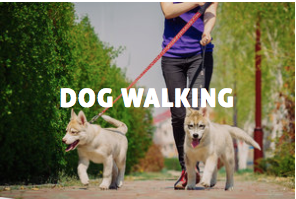
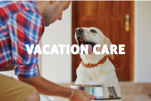

It’s personal play time for just your dog - or dogs. Let’s Walk Austin dog walks are chaos-free, fun and one-on-one! They’ll get plenty of exercise and individual loving attention. You’ll get a detailed walk notification including GPS route, potty activity and time started/stopped. Plus, we always take care of any feeding, water refreshing or clean-up that may be needed. We guarantee you will come home to a happy dog.
Standard Walk 30 minutes $16 - $18*<
After Hours $23
Weekends $23
Holidays $30
Additional Dog(s) $3
*Normal walking hours are 9am to 5pm
*Contact for details
Puppies need more frequent potty breaks which is why we offer a discounted puppy service. This includes a quick bathroom break, some needed exercise and lots of play time. We also include a daily pawgress report, a fresh bowl of water, and administering medicine as necessary.
2 Puppy Breaks 20 minutes each $30
Available M-F 9am – 5pm

Vacation care offers the benefits of 3 daily visits and the peace of mind knowing your pet is safely at home. This includes exercise, feeding, medications and any required clean up. We provide detailed email reports that include daily updates and pictures via text or email.
Weekday Vacation Care:
Three daily 30 minute walks
one dog $60 (per day)
additional dog(s) $10
please email for holiday rates.